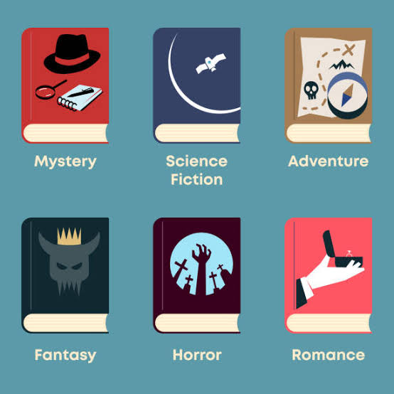

A genre is a category used to describe different types of stories. Genres can be found in books, movies, television, video games, and other forms of entertainment. Sometimes they are mixed and combined or left alone.

Genres help audiences find stories they enjoy. They also give writers a way to create stories with certain themes, settings, and styles.